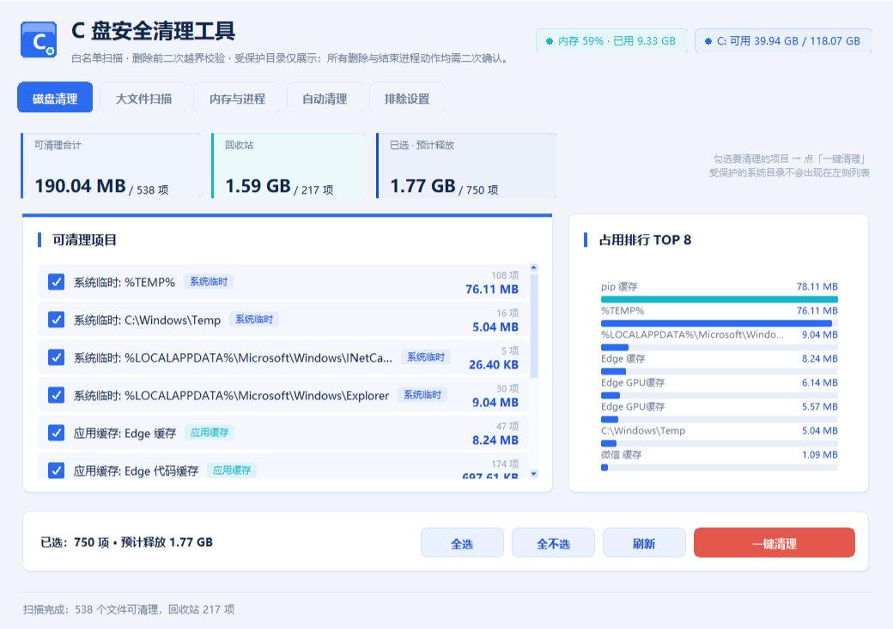
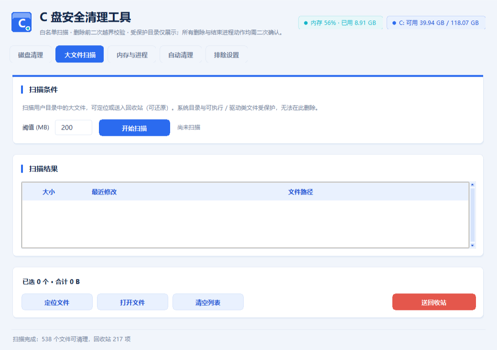
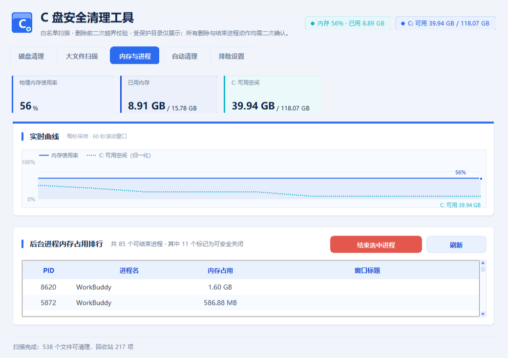
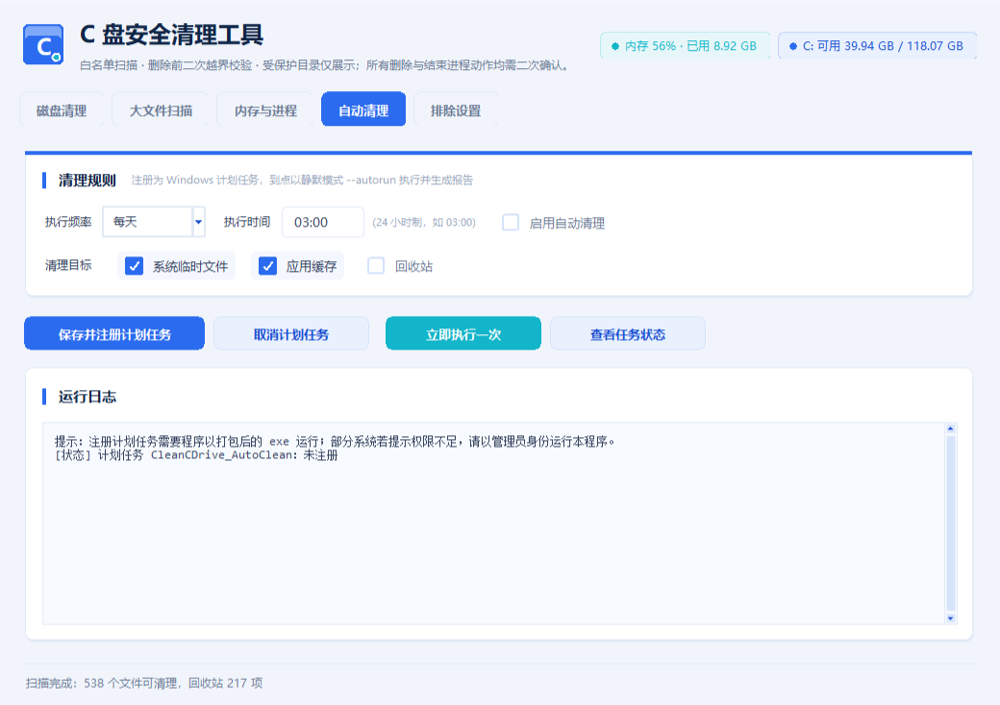
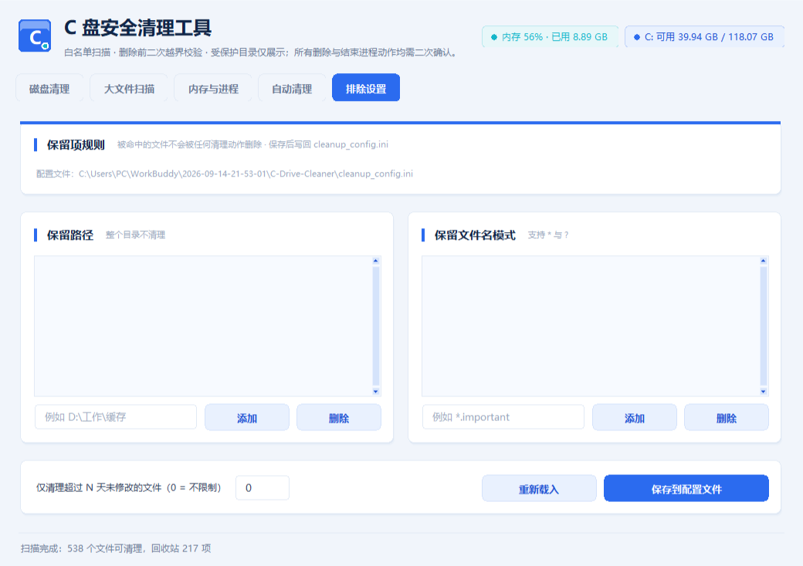

一个帮你找出 C 盘里没用的临时文件、软件缓存和回收站内容的小工具。 它会先把能删的东西列成一张清单给你看，你勾选完、点确认，它才开始清理。

主界面：左边是勾选清单，右边是占用排行，底部是一键清理
不需要任何电脑知识，看完这一段你就懂了
C 盘就像电脑的主仓库，系统和你装的软件都在里面。仓库里除了正经东西， 还会不断堆积一些用不上的零碎 —— 就像做饭会剩菜叶、拆快递会留纸箱一样。
这些东西留着不会让电脑更快，删掉也不会丢任何个人文件 —— 照片、文档、聊天记录都不在里面。而这个工具就是个保洁员： 进屋转一圈 → 把能扔的列成清单 → 你点头 → 它才动手 → 干完给你一张账单。
把没用的临时文件、缓存、回收站找出来，你勾选后一键清理。
最常用找出电脑里特别大的文件（默认 200 MB 以上），弄清空间到底去哪了。
找空间看内存用了多少、是哪些软件在偷偷吃内存，可安全结束占资源的程序。
治卡顿设定每天或每周的时间，让 Windows 到点自动清理，不用你操心。
省心整个流程不超过一分钟，不需要任何电脑基础
点本页下方的「免费下载」按钮，把 CleanCDrive.exe 存到电脑上（一般会存在「下载」文件夹）。
找到刚下载的文件，双击它。稍等几秒，界面上就会出现一份「可清理清单」。
清单里每一行左边都有个小方框，默认已经帮你勾好了。有不想删的就点一下取消勾选，然后点右下角的 「一键清理」，在弹出的确认框里再核对一遍，确认即可。
C:\Windows）在清单里只会显示出来给你看，永远不会被删除。
点顶部那排蓝色按钮就能切换
按大小阈值找出占地方的大文件，可定位、打开，或送进回收站（还能还原）。

实时内存曲线 + 后台进程占用排行；系统核心进程已隐藏，不可能误关。

选好频率和时间，注册成 Windows 计划任务，到点静默执行。

告诉工具「这些东西别动」，可以让清理范围更保守。

它从设计上就假设「用户可能会点错」，所以每一步都上了锁
最重要的一条：这个工具只做减法里最安全的那部分 —— 它不碰注册表、不卸载软件、不动个人文件、不移动任何数据。 想验证的话，全部源代码都公开在仓库里，随时可以自己看。
遇到问题先看这里，多数疑问都能解答
不会。程序只被允许扫描和删除 Windows 临时文件夹、浏览器缓存、软件缓存目录和回收站。 照片、文档、桌面文件、微信聊天记录、游戏存档都不在这个范围里，程序连看都不会去看。 而且每删一个文件前都会再检查一次完整路径，只要不在白名单内就直接拒绝。
不会。程序有三道锁：只扫描白名单目录；删除前对每个文件做二次路径校验；系统关键目录 （C:\Windows、C:\Program Files 等）在界面上只显示、不可操作。此外约 40 个系统核心进程被硬编码保护， 不会显示在进程列表里，不存在误关的可能。
这是 Windows 对所有未购买数字签名的免费软件的统一提示，不是病毒警告。点窗口里的「更多信息」， 再点出现的「仍要运行」按钮即可。如果杀毒软件误删了这个文件，可以在杀毒软件的隔离区里还原并选择信任。
有些目录（如 C:\Windows\Temp、回收站）需要管理员权限才能清理。右键点击程序， 选择「以管理员身份运行」，在弹出的提示里点「是」，就能清理这些目录了。
正常现象。有些临时文件正被运行中的程序占用，Windows 不允许删除正在使用的文件。 程序的做法是跳过它、计入「失败」，然后继续处理其他文件，不会中断或报错。 想删得更干净，可以先把不用的软件关掉再清理一次。
三个可能：回收站那一项没有勾选；或者显示的是预估值，实际会跳过被占用的文件； 或者你的空间是被少数几个大文件吃掉的 —— 去「大文件扫描」页找找看。
不会。它是纯本地运行的，代码里没有任何网络请求。它不知道你是谁，也不会把你的任何信息发到任何地方。 你可以自己下载源代码验证这一点。
按顺序检查：①「启用自动清理」是否打了钩；②是否点过「保存并注册计划任务」； ③点「查看任务状态」确认任务登记成功；④是否需要管理员权限；⑤设定的时间点电脑是否开着机 —— 如果电脑关机了任务不会补跑，这种情况建议改成「每次登录」或你不关机的时间。
目前只针对 C 盘。因为 C 盘最容易爆满，一旦满了后果也最严重。
它不需要安装，所以直接删掉文件夹就行。如果开过自动清理，先打开程序切到「自动清理」页， 点「取消计划任务」，再删除文件即可。